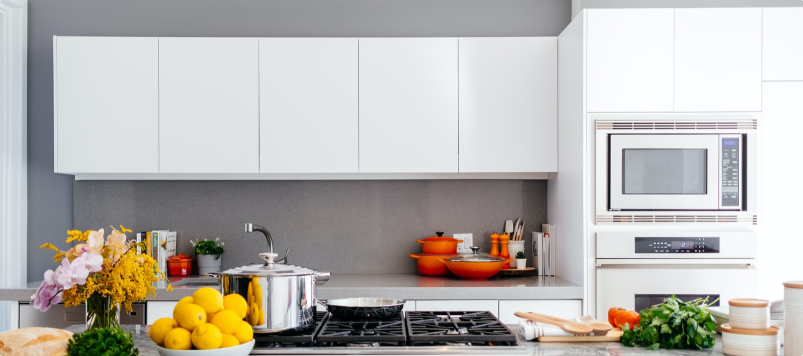

Експлуатаційні характеристики закладаються самим виробництвом. Іспанську плитку роблять з білих глин,
які мають мінімальну кількість домішок і витримують високотемпературний випал. Її структура дрібнопориста.
На такій плитці сколи та тріщини утворюються вкрай рідко.
Чому італійська плитка найкраща
Експлуатаційні характеристики закладаються самим виробництвом. Іспанську плитку роблять з білих глин,
які мають мінімальну кількість домішок і витримують високотемпературний випал. Її структура дрібнопориста.
На такій плитці сколи та тріщини утворюються вкрай рідко. Вона екологічна, не вигоряє на сонці, не псується
під впливом побутової хімії, витримує підвищені навантаження.
Як відрізнити іспанську плитку зовні? Хмарно строкатість - не про неї. Здебільшого, колекції виконані
в пастельних відтінках, багато монохромних варіантів. Зате декору - хоч греблю гати: це і бордюри,
і панно, і фризи, і рамки. У колекціях багато імітацій мармуру, шкіри, бетону, тканини, металу.
Популярна квадратна плитка під дерево. Ще одна перевага плитки з Іспанії - цифровий друк неймовірного якості.
Вона дозволяє максимально точно передати фактуру цегли, каменю, цементу.
Фірмовий стиль - плитка котто і майоліка. Дизайн першої невиразний.
Котто - традиційна матова плитка нейтральних кольорів, яка часто використовується для укладання на вулиці.
Майоліка, навпаки, являє собою буйство фарб в обрамленні білої глазурі.
Де застосувати
Титка «made in Spain» - головний атрибут інтер'єру, наповненого хорошим смаком і стилем.
Таке облицювання хороша в будь-якій кімнаті, але всю свою цінність продемонструє в
приміщеннях з великою прохідністю і особливими умовами.
-
Плитка для ванною з Іспанії - ідеальний варіант. Підвищена вологість їй не страшна,
грибок і пліснява на поверхні не утворюються. Для стін можна вибрати надтонку плитку,
яка відмінно ріжеться. Створити неповторний дизайн допоможуть тривимірна плитка з глазурованою
структурованою поверхнею (така є в колекції Estoril бренду BESTILE), вінтажна чорно-біла матова плитка
(колекція Vodevil бренду VIVES) або сучасний мультиколор з червоної глини (колекція Arti бренду Dual Gres).
Іспанська плитка для підлоги в ванну кімнату може бути різних форматів, фактур і квітів.
У продажу ректифікований керамограніт під мармур будь-яких відтінків, геометричні малюнки,
імітація каменю (особливу увагу на колекцію Canyon від бренду APARIСI - здається, що ця плитка прийшла до нас з космосу),
дизайнерські візерунки і багато іншого.
-
Плитка для кухні випускається матовою і глянсовою, з гладкою і рельєфною поверхнею.
На підлозі добре виглядають штучно зістарені зразки, імітація під дерев'яну дошку,
мультиколор з орнаментами, клінкер під камінь. Створити декор можна плиткою
з мозаїчними елементами або абстракцією. Виділити фартух допоможе глянсова
плитка для стін з гладкою поверхнею - її легше мити, але і плями від жиру і
бруду тут будуть помітніше. Добре зарекомендував себе ректификат, який укладають
з мінімальними швами. На кухні можна візуалізувати будь-який сюжет: квіткові мотиви,
натюрморти, використовувати абстракцію, мозаїку, фотопанно. А ось плитку для стін в кухні
з рельєфом як фартуха краще не укладати - тільки для зонування та декорування одній зі стін.
Все обумовлено практичністю - чистота покриття з виступами і западинами вимагає зусиль.
-
Плитка для холу повинна бути зносостійкого. Тут навантаження на неї підвищена, а значить,
звичними стануть часті забруднення і прибирання. Додати в інтер'єр дух класицизму допоможе
підлоги декорована плитка від прославленого іспанського бренду APE Ceramica з колекції Australian.
Орнамент з імітацією натурального каменю виглядає вишукано, дорого і помітно, а глянсова поверхня
сприяє грі світла. Практичний непомітний варіант - лапатірованная ректифікований плитка під камінь
від бренду VIVES (колекція Portofino). Цей керамограніт має IV клас стирання, тому прослужить десятки
років без сучка без задирки. І, звичайно, універсальний вибір - плитка для підлоги під дерево.
Її плюс - в різноманітті кольору і гармонійному поєднанні з будь-яким стилем.

Експлуатаційні характеристики закладаються самим виробництвом. Іспанську плитку роблять з білих глин,
які мають мінімальну кількість домішок і витримують високотемпературний випал. Її структура дрібнопориста.
На такій плитці сколи та тріщини утворюються вкрай рідко. Вона екологічна, не вигоряє на сонці, не псується
під впливом побутової хімії, витримує підвищені навантаження.
Як відрізнити іспанську плитку зовні? Хмарно строкатість - не про неї. Здебільшого, колекції виконані
в пастельних відтінках, багато монохромних варіантів. Зате декору - хоч греблю гати: це і бордюри,
і панно, і фризи, і рамки. У колекціях багато імітацій мармуру, шкіри, бетону, тканини, металу.
Популярна квадратна плитка під дерево. Ще одна перевага плитки з Іспанії - цифровий друк неймовірного якості.
Вона дозволяє максимально точно передати фактуру цегли, каменю, цементу.
Фірмовий стиль - плитка котто і майоліка. Дизайн першої невиразний.
Котто - традиційна матова плитка нейтральних кольорів, яка часто використовується для укладання на вулиці.
Майоліка, навпаки, являє собою буйство фарб в обрамленні білої глазурі.